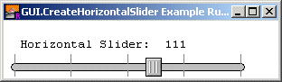

GUI.CreateHorizontalSlider (x, y, length : int, min, max, start : int, actionProc : procedure x (value : int)) : int
Creates a horizontal (left-right) slider and returns the slider's widget ID.
A slider is a widget that allows the user to set a continuous set of values. It has a real-life equivalent in things such as a stereo volume control.

A Horizontal Slider
To control a slider, the user clicks on the slider box and drags it back and forth. Every time the value changes, a procedure is called with the new value as a parameter.
The range of values that the slider will give is determined by the min and max parameters in the Create call. The left side of the slider represents the minimum value, while the right represents the maximum value.
The x and y parameters specify the lower-left corner of the slider track. This means that the slider actually extends above and below this point (and slightly to the left of it to take into account the rounded end of the track). The length parameter specifies the length of the track in pixels. (You can use GUI.GetX, GetY, GetWidth, and GetHeight to get the exact dimensions of the slider.) The min and max parameters are the minimum and maximum values returned by the slider. The start parameter is the initial value of the slider and should be between min and max inclusive. The actionProc parameter is the name of a procedure that is called when the value of the slider is changed. The parameter to the action procedure is the current value of the slider.
The following program creates a horizontal slider. Whenever the slider's value is changed, a message is displayed in the window.
import GUI
View.Set ("graphics:300;60,nobuttonbar")
var slider : int
procedure SliderMoved (value : int)
Text.Locate (2, 3)
put "Horizontal Slider: ", value : 4
end SliderMoved
slider := GUI.CreateHorizontalSlider (10, 10, 250,
50, 150, 50, SliderMoved )
loop
exit when GUI.ProcessEvent
end loop
In some instances, you will want the the minimum and maximum values of the slider to be reversed (right is minimum). In that case, call the GUI.SetSliderReverse procedure to flip the values of the slider.
Sliders always have a fixed height (for horizontal sliders) or width (for vertical sliders).
When GUI.CreateHorizontalSlideror GUI.CreateHorizontalSliderFull is called, the newly created slider will be displayed immediately unless GUI.DisplayWhenCreated has been called with the display parameter set to false.
When a slider is not enabled, the appearance does not change. However, the slider no longer responds to any mouse clicks until it is enabled again.
The following GUI subprograms can be called with a slider as the widgetID parameter:
GUI.Show, GUI.Hide, GUI.Enable, GUI.Disable, GUI.Dispose, GUI.GetX, GUI.GetY, GUI.GetWidth, GUI.GetHeight, GUI.SetPosition, GUI.SetSize, GUI.SetPositionAndSize, GUI.GetSliderValue, GUI.SetSliderValue, GUI.SetSliderMinMax, GUI.SetSliderSize, GUI.SetSliderReverse
Exported qualified.
This means that you can only call the function by calling GUI.CreateHorizontalSlider, not by calling CreateHorizontalSlider.
GUI.GetSliderValue and GUI.SetSliderValue for reading and setting the value of a slider, GUI.SetSliderMinMax for changing the minimum and maximum values of a slider. See also GUI.SetSliderSize for setting the length of a slider and GUI.SetSliderReverse for reversing the sense of a slider.